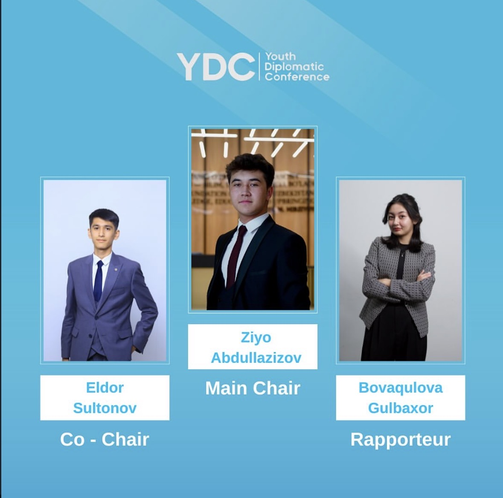

AUGUST 2025 · TASHKENT
CONFERENCE LEADERSHIP
Youth Diplomatic Conference
Main Chair
Served as Main Chair, leading committee proceedings and supporting structured, substantive debate. The role involved guiding discussion, maintaining procedural flow and helping delegates reach clear outcomes.